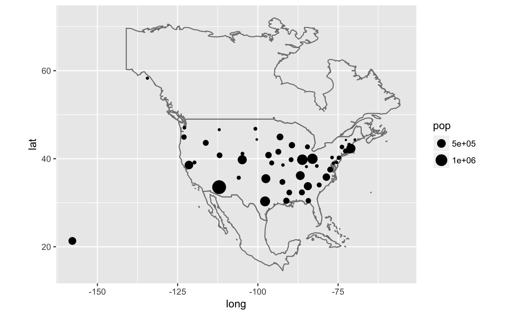

This is a quick and dirty way to get map data (from the maps package) on to your plot. This is a good place to start if you need some crude reference lines, but you'll typically want something more sophisticated for communication graphics.
borders(database = "world", regions = ".", fill = NA, colour = "grey50", xlim = NULL, ylim = NULL, ...)
| database | map data, see |
|---|---|
| regions | map region |
| fill | fill colour |
| colour | border colour |
| xlim, ylim | latitudinal and logitudinal range for extracting map
polygons, see |
| ... | Arguments passed on to
|
if (require("maps")) { ia <- map_data("county", "iowa") mid_range <- function(x) mean(range(x)) seats <- plyr::ddply(ia, "subregion", plyr::colwise(mid_range, c("lat", "long"))) ggplot(ia, aes(long, lat)) + geom_polygon(aes(group = group), fill = NA, colour = "grey60") + geom_text(aes(label = subregion), data = seats, size = 2, angle = 45) data(us.cities) capitals <- subset(us.cities, capital == 2) ggplot(capitals, aes(long, lat)) + borders("state") + geom_point(aes(size = pop)) + scale_size_area() + coord_quickmap() # Same map, with some world context ggplot(capitals, aes(long, lat)) + borders("world", xlim = c(-130, -60), ylim = c(20, 50)) + geom_point(aes(size = pop)) + scale_size_area() + coord_quickmap() }